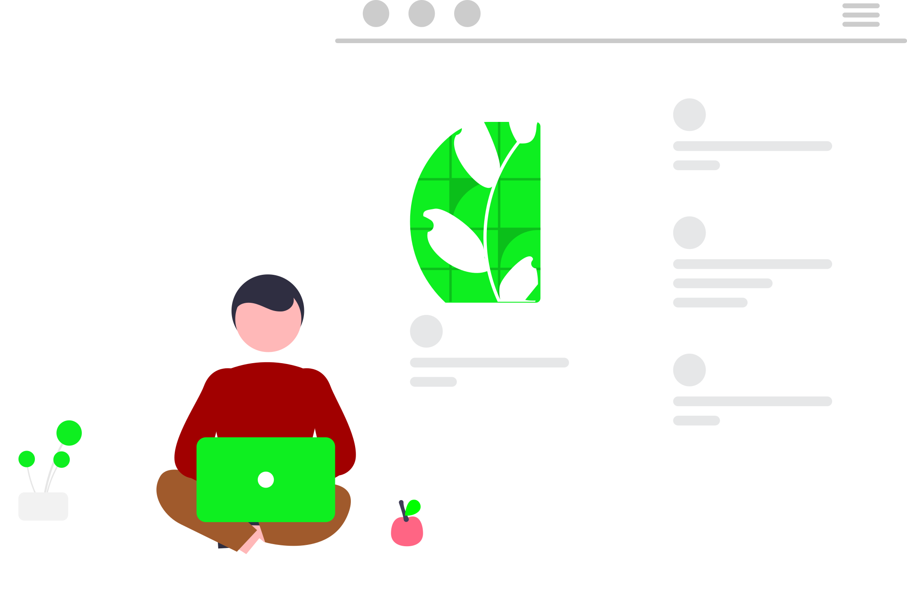

Saya adalah orang yang menyukai matematika. Semua berasal dari ilmu yang identik dengan pemecahan masalah ini.
Saya mengenal robotika saat masih dibangku SLTP. Saya belajar secara
otodidak melalui platform YouTube dan Google. Project demi project saya buat hingga saya mengeluarkan project kebanggaan saya yang bernama FJR 2.0.
Disamping mempelajari ilmu
robotika saya juga mengikuti program keterampilan multimedia. Saya mengikuti program ini selama tahun, dan diakhiri dengan praktek lapangan yang dilakukan di salah satu percetakan
terbesar di kabupaten Pasaman Barat.
Setelah melewati semua itu, saya berpikir bagaimana untuk menggabungkan semua skill yang telah saya kuasai sebelumnya. Skill coding, membuat
desain dan pemecahan masalah dengan matematika. Maka saya menemukan ilmu baru yang mencakup semua skill itu. Saya akan menjadi Web Development.